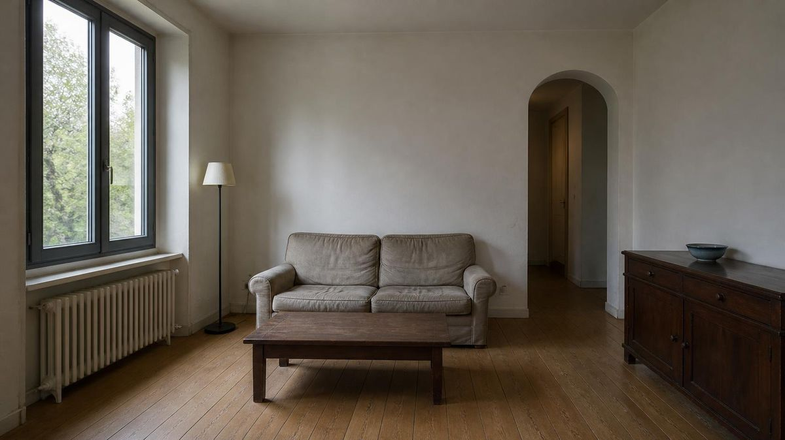
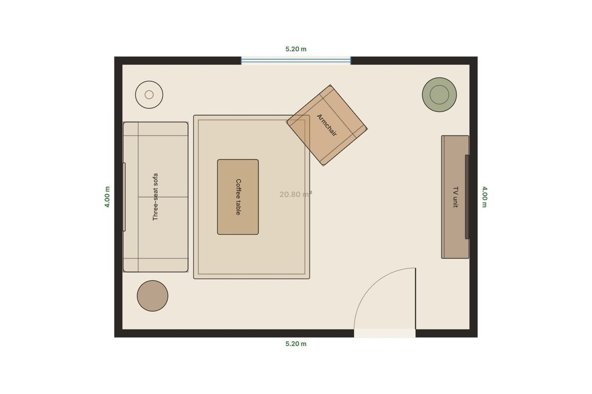
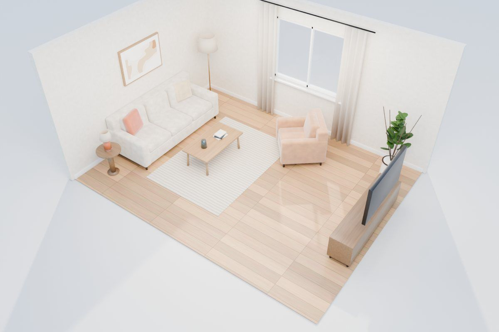
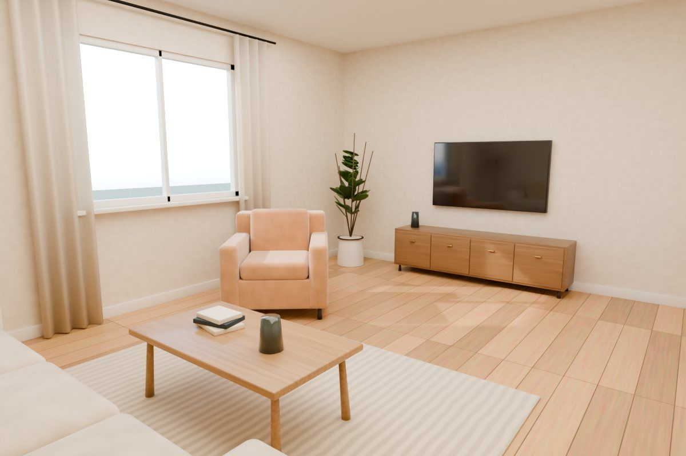

Makon
October 2026
An AI studio that takes one photo of a room and carries it all the way to a measured plan, a 3D model, a furniture list and a build brief.
Photoone picture of the roomRedesignAI render or on-device previewPlanmeasured 2D floor plan3Dlit room you can walk aroundFurnishreal-size pieces, fit checks




JavaScript · three.js · Vercel Functions · FLUX.2 / OpenAI images · IndexedDB